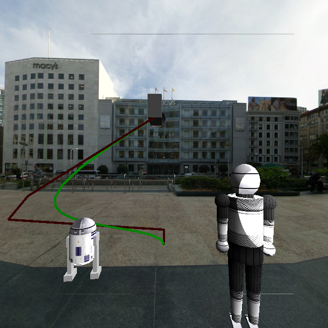

CS 475/675 Assignment 4 (Droids - Animation)
Table of Contents
1 Making the recording interface and correctly saving the keyframes file
The state of the robots, lights and camera can be recorded by pressing `F'. The state is appended to `keyframes.yaml' file. yaml format was used mainly because of the readability of the created file, rather than to avoid parsing text.
2 Correct interpolation in playback mode
`P' is binded to the interpolation and playback function. It reads all the key frames from `keyframes.yaml' interpolates between them and plays them back. For simplicity we have used a constant number of frames between key frames.
Instead of `P', if `R' is used the intermediate frames are copied from the framebuffer and stored to a file.
3 Correct use of glfw timers for playback
While playing back using `P', glfw timers in particular glfwGetTime is used to pace the frames at the required rate. The core timing code from main.cpp is:
frame_start = glfwGetTime(); renderGL(); env.draw(); glfwPollEvents(); draw_time = glfwGetTime() - frame_start; sleep_time_ms = int(1000.0*(frame_time - draw_time)); if( sleep_time_ms > 0.0 ) { std::this_thread::sleep_for(std::chrono::milliseconds(sleep_time_ms)); } glfwSwapBuffers(window);
In short the main thread is made to sleep for any time remaining after rendering a frame and polling for events.
4 Making the video and uploading to Youtube: 20 marks
In process as the due date for this part is Nov 27th.
5 Bonus: Move camera along a Bezier curve

Authoring a Bezier curve
Functionality to move the camera along a Bezier curve has been implemented. To author a Bezier curve a 3D-cursor in the shape of a camera can be turned on by using the key `*'. This cursor can be moved to any position and orientation using the keybindings for moving an object (`TAB' is used to switch 'active object' status from one object to the next). At any point, the cursor's pose can be recorded using `+' and the last pose can be deleted using `-'. These recorded poses are uses as the coordinates of the control polygon, and corresponding Bezier curve is updated each time `+' or `-' is used.
Points on the curve can be sampled and used to animate the camera position on it.
6 Keyboard Bindings
| key | binding |
|---|---|
| ESC | quit application |
| tab | swap controlled active object |
| j | toggle light 1 |
| k | toggle light 2 |
| l | toggle spot light |
| 1 | bend forward at hip |
| 2 | bend backward at hip |
| 3 | bend left hand forward at elbow |
| 4 | bend right hand forward at elbow |
| 3 | r2d2: rotate head left |
| 4 | r2d2: rotate head right |
| 5 | bend left hand backward at elbow |
| 6 | bend right hand backward at elbow |
| 7 | bend arms backward at shoulder |
| 8 | bend arms forward at shoulder |
| 9 | bend arms up at shoulder |
| 0 | bend arms down at shoulder |
| q | make humanoid robot walk |
| arrow keys | rotate perspective camera |
| z, x | move perspective camera forward/backward |
| w, s | move object along its z-axis |
| a, d | rotate robot about y axis |
| v,b,n,m | move object along its x, y axes |
| y,u,i,o | rotate object around its x, z axes |
Date: Nov 6th, 2015